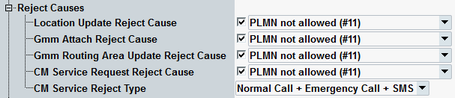

The parameters in this section configure the rejection of location update requests and attach requests received from the MS.
The rejection causes are defined in 3GPP TS 44.018, annex F. The purpose of rejecting MS requests is to test the reaction of the MS: does it repeat the request at all and if so, in which time intervals.
Option R&S CMW-KS210 is required.

If the checkbox is enabled, the application rejects location area update requests from the MS and includes the selected reject cause in the reject message.
Remote command:If the checkbox is enabled, the application rejects attach requests from the MS and includes the selected reject cause in the reject message.
Remote command:If the checkbox is enabled, the application rejects routing area update requests from the MS and includes the selected reject cause in the reject message.
Remote command:If the checkbox is enabled, the application rejects CM service requests from the MS and includes the selected reject cause in the reject message. See also "CM Service Request Type".
Remote command:Specifies, to which type of CM service the parameter "CM Service Request Reject Cause" applies.
Remote command: